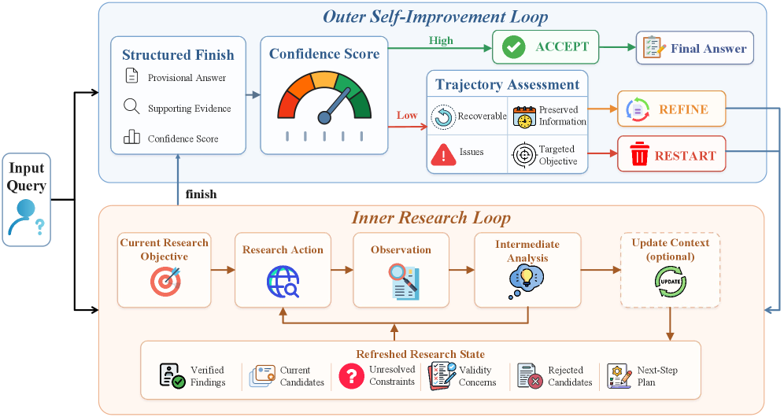

AREX: Recursively Self-Improving Deep-Research Agent
TL;DR
- AREX ("AREX: Towards a Recursively Self-Improving Agent for Deep Research"; BAAI, arXiv 2607.21461, July 2026; Shuqi Lu, Chaofan Li, Kun Luo, et al., senior author Zheng Liu) builds deep-research agents around a discovery–verification asymmetry: finding an answer satisfying many constraints is expensive, but verifying a candidate decomposes into cheap constraint-wise checks.
- The agent alternates an inner research loop (search, read, construct a provisional answer) with an outer self-improvement loop (audit the answer constraint by constraint, keep what's verified, turn unresolved constraints into targeted follow-up research), sustained over long horizons by a learned context-update tool that compresses interaction history into a compact improvement state.
- Two open models — a 4B dense (AREX-Turbo) and a 122B-A10B MoE (AREX-Base) — trained via agentic mid-training plus long-horizon RL with key-step reward emphasis; claimed to substantially outperform comparable-scale baselines on BrowseComp, WideSearch, DeepSearchQA, HLE, and other benchmarks (no per-benchmark numbers were retrievable from the abstract or project page — verify in the paper).
Why this matters
Deep-research agents mostly scale one way: search longer, branch wider, spend more tokens. The marginal value of that decays fast, because an unstructured longer search neither knows which parts of its current answer are already right nor which specific constraint is still violated. AREX's bet is that the structure of research questions themselves — typically conjunctions of checkable constraints ("a paper from venue X, before year Y, whose first author later did Z") — licenses a fundamentally different scaling axis: iterate audit-and-repair on the current best answer rather than restarting or extending a blind search.
Within the self-improving-agents thread of this reading list, AREX is notable for where it locates "recursive self-improvement": not in weight updates during deployment, and not in harness rewriting, but in the answer state across iterations at inference time — with the capability to run that loop trained into the weights via mid-training and RL. It is the thread's clearest example of turning verification asymmetry (the intuition that checking is cheaper than generating) into an explicit agent architecture and training objective. And unlike much of the deep-research literature built on closed models, BAAI released the models, making the recipe inspectable at 4B scale.
The core idea
For multi-constraint research tasks, discovery and verification have asymmetric costs and — crucially — asymmetric decomposability. Discovery is global: candidates must jointly satisfy all constraints, and search space grows combinatorially. Verification is local: given a candidate, each constraint can usually be checked independently and tractably. Therefore the optimal use of additional compute is not more discovery but a recursion: verify the current provisional answer constraint-wise, freeze the verified portion, and convert the unverified residue into a new, much smaller, targeted research problem. The partially verified state acts as both a certificate of progress and a plan for what to do next. The paper's term "recursively self-improving" refers to this: each cycle improves the answer produced by the previous cycle, using verification output as the improvement signal.
The second, less obvious component: this recursion dies without context management. Each cycle appends searches, page reads, and audit results; the history outgrows any window. AREX therefore learns an autonomous context-update tool — the agent itself compresses its interaction history into a compact "improvement state" that preserves exactly the two things the recursion needs (verified evidence and unresolved constraints), with no external summarizer model in the loop.
How it works

Figure from the paper: AREX's recursive self-improvement framework — the inner research loop maintains the research state and externalizes a provisional answer with evidence and confidence; the outer loop accepts, refines, or restarts.
Inference-time loop (per the abstract and project page):
- Inner research loop — gather evidence: search, read, and construct a provisional answer to the full task.
- Outer self-improvement loop — audit: check the provisional answer constraint by constraint against gathered evidence; identify claims that are unresolved or unsupported.
- Decide — accept, refine, or restart from the improved state: verified evidence is preserved; each unresolved constraint spawns targeted follow-up research rather than a from-scratch retry.
- Context update — the learned tool compresses the growing history into the compact improvement state (verified evidence + unresolved constraints), which seeds the next cycle. The project page describes verification as the transition mechanism: it "preserves supported evidence, compresses the working context, and turns remaining uncertainty into a targeted next research problem."
The loop in the paper's notation. Within research round \(k\), the policy autonomously compresses its own history \(h_t^{(k)}\) of (thought, action, observation) triples and continues from the refreshed working context:
where \(f_\theta\) is the learned context-update tool (same policy, no external summarizer), \(z_\tau^{(k)}\) the compact state produced at the last compression step \(\tau\), and \(\oplus\) concatenation with the steps taken since. The round ends by externalizing a structured result and auditing it:
with \(y^{(k)}\) the provisional answer, \(\mathcal{E}^{(k)}\) supporting evidence, \(s^{(k)}\) confidence, \(v^{(k)}\) a recoverability verdict, \(\mathcal{P}^{(k)}\) preserved verified findings, \(\mathcal{I}^{(k)}\) unresolved issues, and \(q^{(k+1)}\) the targeted objective for the next round. The outer loop's decision rule is
where \(\tau\) is the confidence threshold; a Refine seeds round \(k{+}1\) with \(h_{0}^{(k+1)}=\operatorname{Refresh}(\bar{h}_{T_k}^{(k)},\mathcal{P}^{(k)},\mathcal{I}^{(k)})\), preserving what was verified and targeting the residue.
# AREX inference: recursive answer improvement
k <- 0; objective q_0 <- task x
repeat:
# inner research loop (round k)
while agent has not called finish:
(thought m, action a) <- pi_theta(x, q_k, working context)
o <- execute tool (search / read / browse)
if history grows too long:
z <- update_context(history) # learned compression tool
working context <- z (+) steps since compression
(y, E, s) <- finish: provisional answer, evidence, confidence
# outer self-improvement loop: constraint-wise audit
(v, P, I, q_{k+1}) <- audit(x, y, E)
if s >= tau: return y # ACCEPT
elif v == 1: context <- Refresh(P, I); k++ # REFINE: keep verified, chase residue
else: restart from x, discard trajectory # RESTART
Training pipeline:
- Data: verified synthetic tasks plus high-quality trajectories — synthetic generation presumably makes constraint-wise ground truth available for free (inferred from the thread — verify in the paper for the construction details).
- Agentic mid-training: instills the tool-use and loop-following behavior before RL.
- Long-horizon RL: optimizes end-task success across full multi-cycle episodes. To fight sparse terminal rewards over long horizons, training emphasizes key steps — moments where decisive evidence is acquired or an erroneous research direction is corrected — a targeted form of credit assignment rather than uniform per-step shaping. Concretely, the step-level advantage in the paper's clipped step-aware objective is
where step \(j\) of trajectory \(i\) receives the group-normalized outcome advantage \(A^{\mathrm{out}}_i\) (episode reward \(R_i\) standardized within the rollout group) plus a bounded bonus \(B_{i,j}\) on annotated key steps, weighted by \(\lambda_{\mathrm{key}}\) and gated to successful trajectories only.
Models: AREX-Turbo, a 4B dense model, and AREX-Base, a 122B-A10B mixture-of-experts (10B activated parameters). Both are released; a live app exists at arex-research.com.
Results
No specific numbers are present in the fetched sources (abstract and project page render results as charts without readable values), so only the qualitative claims can be reported:
- Across BrowseComp, WideSearch, DeepSearchQA, Humanity's Last Exam (HLE), and other reasoning and tool-use benchmarks (the project page adds GAIA and xbench-2510), AREX "substantially outperforms comparable-scale baselines."
- AREX "remains competitive with models using substantially more activated parameters" — the interesting efficiency claim, especially for the 122B-A10B MoE with only 10B active, and for the 4B dense model as a small-footprint research agent.
- Per-benchmark scores, baseline identities, and ablations (loop vs. no-loop, learned context tool vs. external summarizer, key-step emphasis vs. uniform reward) must be taken from the paper itself.
How it connects
- Within this reading list: TRACE (turn-level rewards for long-horizon agents, 2607.13988) attacks the same sparse-reward problem AREX addresses with key-step emphasis — compare their credit-assignment choices. PRO-LONG (programmatic memory, 2607.20064) and the Agentic Context Management entry are alternative answers to the same context-outgrowth problem AREX solves with its learned compression tool. The Co-Evolving Evaluation Criteria paper (Cambridge/NVIDIA) and the Lean benchmark-coevolution paper both center verification as the load-bearing signal; AREX imports that philosophy into open-web research, where the "verifier" is the agent's own constraint-wise audit rather than a formal checker — a materially weaker guarantee worth keeping in mind. The rubric-based evaluation wave (AI2's OpenScholar rubric dataset, Harvey LAB-AA's binary-criteria grading) is the eval-side mirror of AREX's constraint decomposition.
- Prior work I'm confident about: Self-Refine (Madaan et al., 2023) and Reflexion (Shinn et al., 2023) established generate-critique-revise loops, but with unstructured natural-language critique; AREX's advance is making the critique constraint-structured and evidence-linked, and training the loop with RL rather than prompting it. CRITIC (Gou et al., 2023) argued self-correction needs external tool grounding — consistent with AREX auditing against gathered evidence rather than pure introspection. WebGPT and the OpenAI/Gemini Deep Research products define the task family; BrowseComp (OpenAI, 2025) practically canonized the multi-constraint question format AREX's architecture is shaped around.
Critical take
- "Recursively self-improving" is doing heavy branding work. The system improves its answer recursively at inference time; weights and harness are fixed after training. This is materially different from RSI in the Gödel-machine sense used elsewhere in this reading list — useful architecture, overloaded terminology.
- Self-audit is not verification. In Lean-style domains the verifier is unforgeable; here the constraint-wise audit is the same model reasoning over its own gathered evidence. Correlated failure is the obvious risk: an agent that misreads a source during discovery can misread it identically during audit, then "freeze" the error as verified evidence — after which the compact improvement state actively protects the mistake from re-examination. Compression that preserves "verified" claims is a ratchet, and ratchets amplify false positives.
- Benchmark–architecture co-adaptation. BrowseComp-style tasks are conjunctive-constraint puzzles by construction, and the training data is synthetic tasks in plausibly the same format. Strong results there may overstate generalization to research questions that are open-textured, contested, or not decomposable into crisp checks — precisely the questions human deep research is for.
- No numbers were verifiable from the fetched sources; the "competitive with much larger models" claim, baseline selection, and the contribution of each component (outer loop, context tool, key-step rewards) all need the paper's tables and ablations before citing.
If you remember three things
- The architectural move: exploit discovery–verification asymmetry — audit answers constraint-wise, keep the verified part, and recurse only on the unresolved residue, so compute goes to targeted repair instead of longer blind search.
- Long-horizon loops live or die on context: AREX trains an in-house context-update tool that compresses history to exactly (verified evidence + unresolved constraints), no external summarizer.
- Trust boundary caveat: AREX's "verification" is model self-audit over web evidence, not a formal checker — expect the recursion to compound gains on checkable conjunctive tasks and to potentially entrench errors on fuzzy ones; get the real numbers from arXiv 2607.21461.